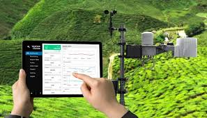

My Projects

Portfolio Website
Personal portfolio built with HTML, CSS, JS.
E-Commerce Store
Developed simple online textile shop using HTML, CSS, JS.
Inventory System
Involves designing and implementing software to help businesses track and manage their inventory, orders, sales, and deliveries.
Ball catcher Game
A project that typically involves a basket moving horizontally to catch falling Balls, with the goal of scoring points by catching balls while avoiding misses.

Environmental monitoring
Typically involves collecting, processing, analyzing, and visualizing data related to various environmental parameters.